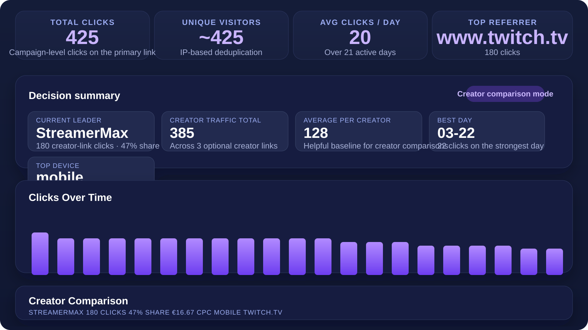

Project Management · Release Train Engineering · Technical Products
IT project management and release leadership in software-heavy product environments.
I lead complex delivery in software-heavy product environments, aligning engineering, product, and stakeholders around clear priorities, realistic plans, and dependable execution. My formal role sits in project and release leadership, supported by enough technical depth to work credibly with software teams, surface risks early, and keep delivery grounded in implementation reality.
I use AI where it improves research, clarity, and execution quality, while keeping ownership, judgment, and accountability firmly human.
- Role
- IT Project Manager and Release Train Engineer
- Core domains
- Firmware, security, delivery, coordination
- Technical depth
- Software, AI, automation, homelab
Profile
How I Work
My professional focus is project management and release train engineering in environments where delivery depends on close coordination across engineering, product, and business stakeholders. I am most effective where technical complexity, prioritization, and execution discipline have to work together.
That combination makes me a strong fit for IT project leadership roles: structured in planning and coordination, pragmatic about tradeoffs, and deliberate in using modern tools, including AI, to improve speed and clarity without weakening accountability.
Experience
Professional Experience
More than a decade across technical product environments, with recent focus on software delivery, firmware-related products, and release coordination.
Software Project Manager / Release Train Engineer, IQSIGHT
Software project and release leadership in a camera- and firmware-related product environment at a Bosch spin-off, coordinating planning, priorities, and cross-team execution in a software-heavy setting.
Software Project Manager / Release Train Engineer, Bosch Security and Safety Systems
Responsible for firmware and plugin-related delivery topics in a security camera environment, helping align engineering work, agile structures, release planning, and cross-team coordination.
Project Manager, MEKRA
Led projects for mirror and camera systems in commercial OEM vehicle environments, balancing customer requirements, technical constraints, and execution across stakeholders including Volvo, Iveco, and CLAAS.
Product Developer, Branofilter GmbH
Built an early engineering foundation through full-time product-development work around construction, SolidWorks, and technical detail. That hands-on background still shapes how I work with technical teams today.
Certifications
Relevant Credentials
SAFe
Certified SAFe RTE
Release Train Engineer certification issued in March 2025 by Scaled Agile, Inc.
SAFe
Certified SAFe 5 Advanced Scrum Master
Advanced Scrum Master certification issued in June 2023 by Scaled Agile, Inc.
SAFe
Certified SAFe 5 Scrum Master
Scrum Master certification issued in February 2023 by Scaled Agile, Inc.
IPMA
IPMA Level D
Certified Project Management Associate. Credential ID: 213116.
Independent work
Technical Depth Outside Work
Outside the formal role, I stay close to implementation through software, infrastructure, automation, and product work. It keeps my delivery judgment grounded in real technical practice.
AI, LLMs, and agents
Using AI to strengthen modern knowledge work
I treat AI as a practical addition to modern knowledge work. I use commercial and open LLMs, and I explore agent-style workflows where they genuinely improve research, planning, iteration, and execution. The point is not automation for its own sake, but better output with clear human ownership.
Homelab and automation
Infrastructure, automation, and operational thinking in practice
My independent technical work also includes infrastructure and automation topics around Proxmox, Docker, Kubernetes, Ansible, Home Assistant, Frigate, and n8n. What matters to me is not tool familiarity on its own, but staying close to how systems are deployed, automated, operated, and kept reliable in practice.
Product thinking
Turning technical ideas into something people can actually use
Whether it is a tool, dashboard, or SaaS idea, I am interested in how technical ideas become products with real usefulness, clear positioning, and practical usability.
Why it matters
I stay technically current and close to implementation realities.
This makes me stronger in delivery roles: better judgment, more realistic planning, and closer alignment with the implementation realities engineering teams deal with every day.
Independent Projects
These projects show the technical and product side I build outside the job: hands-on execution, practical tooling, and continued closeness to implementation.

SaaS for creator campaign attribution, built around clearer performance visibility, practical workflows, and direct business relevance.
Visit cliproi.com
WinBorg

Windows backup manager for Borg, with guided setup, scheduling, and clear restore flows.
View repository
Sentinel-DNS

The self-hosted DNS blocker appliance (Pi-hole/AdGuard-style) with an honest Web UI, API, and an embedded DNS stack.
View repository
DockWatch

A modern, lightweight Docker Compose control GUI for personal homelab use, built to bridge the gap between existing tools.
View repositoryContact
Get In Touch
I am interested in project leadership and release train roles in software-heavy environments. Email works best for direct recruiter outreach, LinkedIn provides role and career context, and GitHub shows the technical side of my independent work.
Best route
Email
Best for recruiter outreach, role discussions, and CV requests.
Career profile
LinkedIn
Background, career history, and professional context.
Technical perspective
GitHub
Repositories, product ideas, homelab topics, and practical implementation.
CV, additional background, and further context are available on request via email or LinkedIn.